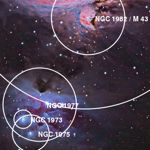

In addition to teaching and giving public lectures, Hogg is working on some non-traditional modes for public outreach:citizen science: With the success of the Astrometry.net system that calibrates, tags, and makes scientifically useful imaging of unknown provenance, Hogg's group has brought tens of thousands of images from thousands of amateur astronomers across the globe into the scientific domain. This opens up new, extremely rich channels for scientific participation by the public, especially in large projects where collaboration is the key to success. Hogg's group is currently exploring the astronomical information and discovery space in web-exposed amateur data, and working towards starting coordinated activity or some kind of Open-Source Sky Survey.
open science: Hogg's research group endeavors to make all of
its algorithms, code, and data available publicly for inspection and
use by members of the public and by other scientists. Much of the
code is available on the web for inspection even during development.
This level of openness is extremely rare, but in fact Hogg's group
has found that the random
scientific interactions produced by
exposure on the web contribute positively to the program in
unanticipated ways. Hogg also reports daily on details of his
research activity in an online
research diary.